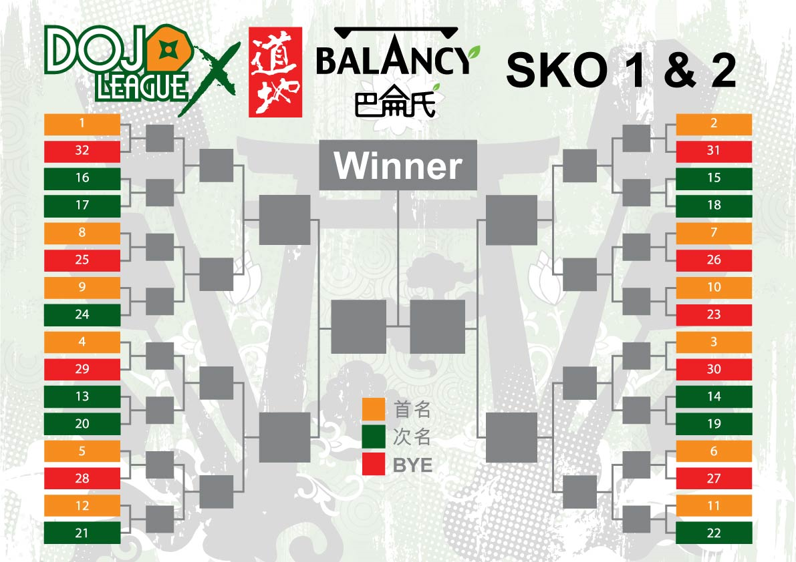
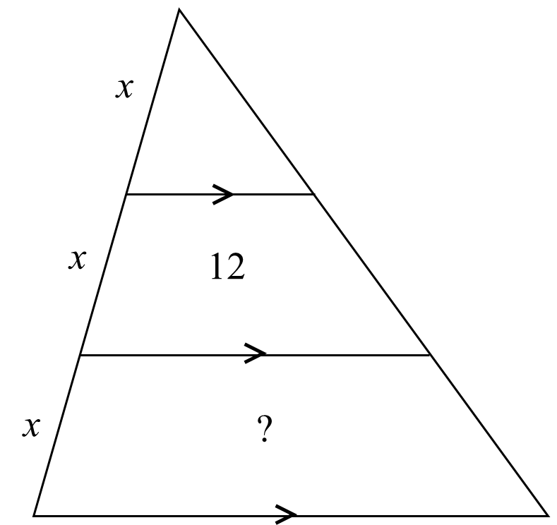
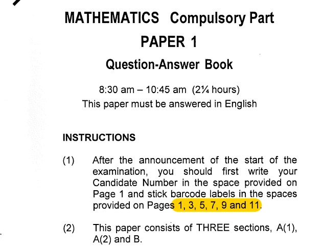

WELCOME
社際數學比賽
Inter-house Mathematics Competition
5/5/2026
比賽規則
- 必答題 (6題): 答對 +20 / 答錯 0 / 不作答 -20
- 搶答題 (20題): 答對 +30 / 答錯 -10
- 補答 (當前最低分社別): 答對 +20 / 答錯 -5
- 「3倍分數」工具: 搶答題分數 (包括補答) 加減乘 3 倍。每社別可用兩次。
必答題 第 1 題
解方程 $5x - \dfrac{5}{2} = 10$。
$x = \dfrac{5}{2}$
必答題 第 2 題
$\dfrac{2}{3} + \dfrac{1}{6} - \dfrac{7}{12} = $
$\dfrac{1}{4}$
必答題 第 3 題
某數的 $25\%$ 是 $15$，求該數。
$60$
必答題 第 4 題
一個正方形的周界是 $36 \text{ cm}$，求該正方形的面積。
$81 \text{ cm}^{2}$
必答題 第 5 題
求 $5, 8, 9, 12$ 的平均數。
$8.5$
必答題 第 6 題
求以下等比數列的第 $7$ 項。
$3, \quad -3\sqrt{3}, \quad 9, \quad -9\sqrt{3}, \quad ...$
$81$
搶答題 第 1 題
以下哪個數是質數？
A. $49$
B. $57$
C. $75$
D. $89$
D
搶答題 第 2 題
家寶在 $400$ 米賽跑的最後 $25$ 米超越了第二名，
問他最後以第幾名完成該賽事？
第二名
搶答題 第 3 題
一桶水先用去 \(\dfrac{1}{3}\)，再用去剩下的 \(\dfrac{1}{2}\)，最後剩 $5$ 升。
該桶水原本有多少升？
$15$ 升
搶答題 第 4 題
買 $3$ 支原子筆和 $2$ 支螢光筆共 $\$34$，
買 $1$ 支原子筆和 $3$ 支螢光筆共 $\$30$。
一支原子筆多少錢？
$\$6$
搶答題 第 5 題
$(a-b)^{2} \equiv$
A. $a^{2}-b^{2}$
B. $(a+b)(a-b)$
C. $a^{2}-2ab+b^{2}$
D. $a^{2}-2ab-b^{2}$
C
搶答題 第 6 題
若 \(a \times b = 24\) 及 \(a + b = 11\)。
求 \(a^2 + b^2 \)。
$=(a+b)^{2}-2ab=121-48=73$
搶答題 第 7 題
請順序回答 $100$ 至 $200$ 之間的平方數。
$100, \quad 121, \quad 144, \quad 169, \quad 196$
搶答題 第 8 題
請以英語讀出數字 $12\,345$。
twelve thousand three hundred (and) forty-five
搶答題 第 9 題
$2$ 億是多少位的數字？
$9$ 位
搶答題 第 10 題
由兩個 $2$ 和一個 $4$ 組成的所有三位數的平均數是多少？
$\dfrac{224+242+422}{3}=\dfrac{888}{3}=296$
搶答題 第 11 題
首五次測驗的平均分 $80$ 分。
第六次測驗需考幾分才可使平均分增加 $2$ 分？
$92$ 分
搶答題 第 12 題
陳太每 $4$ 天去一次超市，黃太每 $5$ 天去一次超市。
她們上一次在超市相遇的日子是 $4$ 月 $15$ 日。
她們最快會在何月何日在超市再次相遇？
$5$ 月 $5$ 日
搶答題 第 13 題
某單淘汰賽比賽共有 $32$ 隊參賽隊伍。
整個賽事共有多少場比賽場次？
（賽事不設季軍賽）

$31$ 場
搶答題 第 14 題
圖片顯示一些相似三角形。
若中間的梯形面積為 $12$，求底部的梯形面積。

$20$
搶答題 第 15 題
下列哪項的值與其他的不同？
A. $2^{\frac{1}{2}}$
B. $-0.5^{-0.5}$
C. $2\sin{45^{\circ}}$
D. $-\dfrac{1}{\cos{135^{\circ}}} $
B
搶答題 第 16 題
現有 $5$ 個鎖頭和 $5$ 把鑰匙，每把鑰匙可以開其中一個鎖頭。
最多試幾次可以找出全部鎖頭跟鑰匙的正確配對？
$10$ 次
搶答題 第 17 題
圓的半徑為 $5 \text{ cm}$，圓外一點 $P$ 到圓心的距離為 $13 \text{ cm}$。
從 $P$ 作圓的兩條切線，切點為 $A$ 和 $B$。 求切線 $PA$ 的長度。
$12 \text{ cm}$
搶答題 第 18 題
DSE 數學卷一是以 A3 紙張對摺印刷的 A4 冊子。
每一張紙均需貼上考生的電腦條碼貼紙。
參閱以下指示，估算該卷有多少頁。

$24$ 頁
搶答題 第 19 題
$A$、$B$、$C$ 三人，
$A$ 說：「$B$ 在說謊」，
$B$ 說：「$C$ 在說謊」，
$C$ 說：「$A$ 和 $B$ 都在說謊」。
誰說真話？
\(B\) 說真話
搶答題 第 20 題
前提 1： 所有的貓都有四條腿。
前提 2： 這隻動物有四條腿。
根據以上前提，以下哪一個結論必然為真？
A. 這隻動物是貓。
B. 這隻動物不是貓。
C. 所有貓都是動物。
D. 有些有四條腿的動物是貓。
D